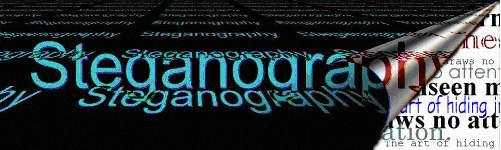
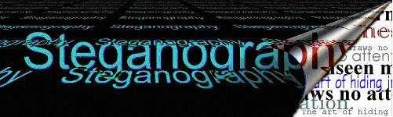
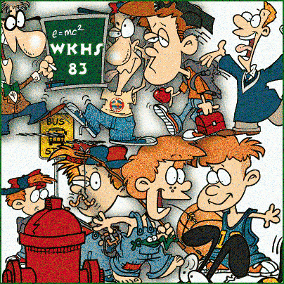
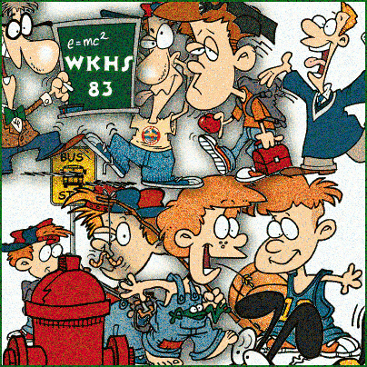
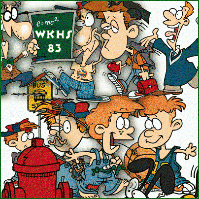
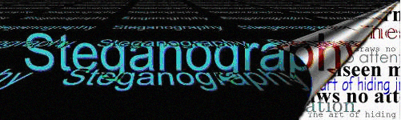
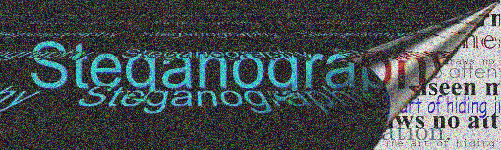

Exercise ThreeExperiments
In this section of the exercise I was to carry out several experiments on larger files. I was going to hide two large text files in different images and see what would happen. The text files that I am using are larger.txt and lrandom.txt which are 72.7 KB and 70 KB in size.
Firstly I was going to save both images in the BMP file that I used in the previous exercise. I used the same encryption algorithm and password as previously for hiding the files. The first finding is that the new images are all identical in size and image quality as the original image.
Below are the images; the image on the left is the original and the image on the left is the image that is hiding the larger.txt file.
 

Below are the images; the image on the left is the original and the image on the left is the image that is hiding the lrandom.txt file. As you can see they are identical in image quality. They are both 220.4 KB in size.
Next I was to see how the original image as well as two images with hidden data would react to being compressed. I compressed each of the files and all of them reacted differently to the compression. The original file was 83% compressed which resulted it being 40 KB in size, the image that had the lrandom.txt was 32% compressed which resulted in its size being 152 KB and finally the image that had the larger.txt file hidden in it was 31% compressed resulting in its size being 154 KB. It is clear that the hidden file inside the image has a massive effect how much of the image can be compressed and that file compression is interfering with the storage of information resulting in the images being less than a third compressed.
Next I was going to do the same test as above but on the GIF image instead of the BMP image. This time there is notable differences between the size of the original image (89 KB) and the sizes of cartoon-large.gif (174 KB) and cartoon-lrandom.gif (172 KB). Also there is a clear difference in image quality between the images.
Below are the images; the image on the left is the original and the image on the right is the image that is hiding the larger.txt file.
 

Below are the images; the image on the left is the original and the image on the right is the image that is hiding the lrandom.txt file.

Next I continued to compress the three image files and this time the ratio of compression was extremely low for each of the files. The original file had the lowest compression of 2% and the other two files had a compression ratio of 4% each which resulted in all the compressed files being only slightly smaller than non compressed version.
For the rest of this exercise I am going to carry out three experiments on this image using three different files. Each file is in a different format and is of a different size. I want to see how this image responds to trying to hide each of the files.
Experiment 1: For this experiment I am going to try to hide a Microsoft Office Word Document of 96 KB in size in the picture. The image was able to hide the picture and the difference in size was the new file was 1 KB greater than the original. Other than that everything else seems the same about the two pictures such as image quality. Below is the image that is hiding the file.
Experiment 2: In this experiment I decided to hide an image within the image. I used the cartoon image that was used in an earlier exercise which is in GIF format and is 89 KB in size. It had the exact same results as the last experiment. So far these results are showing the 24 bit BMP is much better at hiding files when compared to 8 bit GIF. Below is the image that is hiding the file.
Experiment 3: For this experiment I am going to try an hide a report that I have recently conducted as part of my fourth year project. The file is a Microsoft Office Word Document and the size of the file is 422 KB. Unfortunately I am unable to hide the file in the picture as the program keeps popping up with an error stating the file is too large for the picture.
Experiment 4: I decided to conduct one last experiment to see if I could reduce the image quality of the 24 bit BMP. For this experiment I used a Javascript file of size 178 KB. Firstly it took the program longer to hide the file compared to the previous attempts and secondly the image quality was greatly reduced but the file was the exact same size as the original.

Is the hidden file exactly the same as the orginal?
Yes when you retrieve a hidden file it is exactly same as the original. I have tried this on each of the above experiments and each time the hidden files is the exact same as the original.
Reference
All the information used in this website has been sourced from the following locations:
Gary C. Kessler. (2001). Steganography: Hiding Data Within Data .Available: http://www.garykessler.net/library/steganography.html. Last accessed 1-11-2011.
Neil F. Johnson. Steganography. Technical Report. November 1995